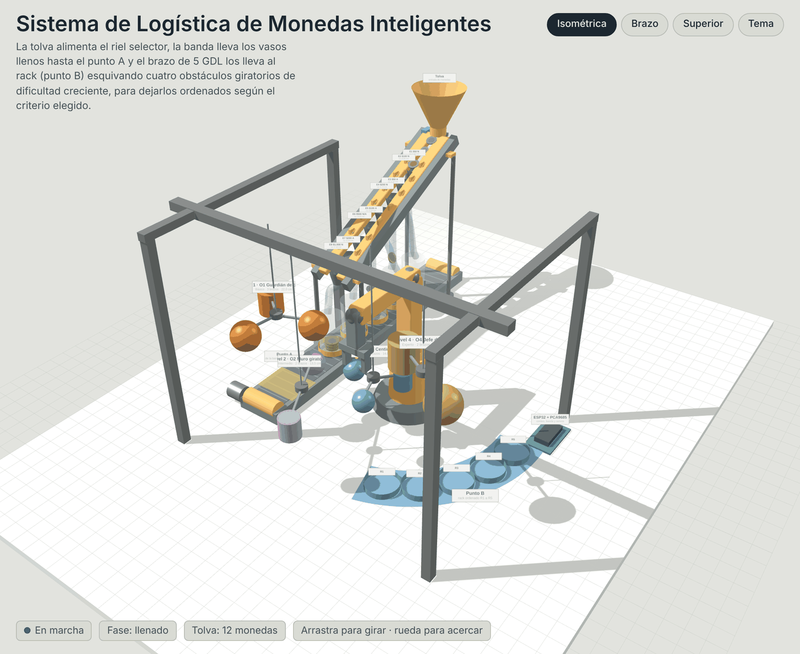
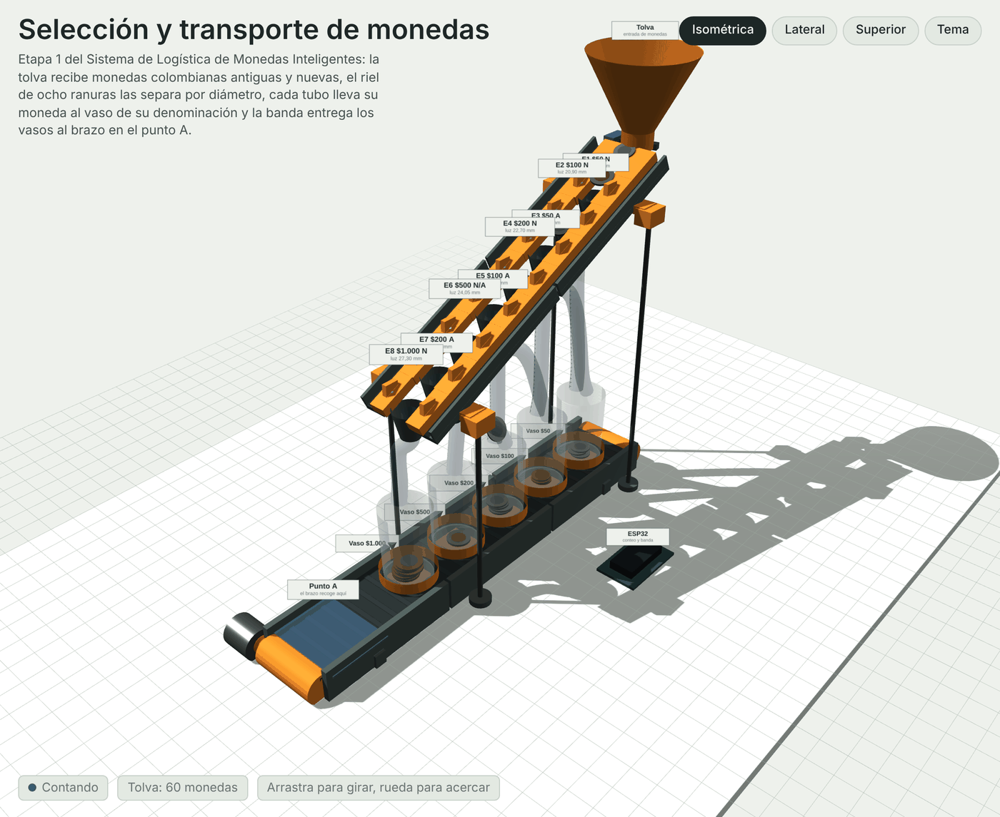
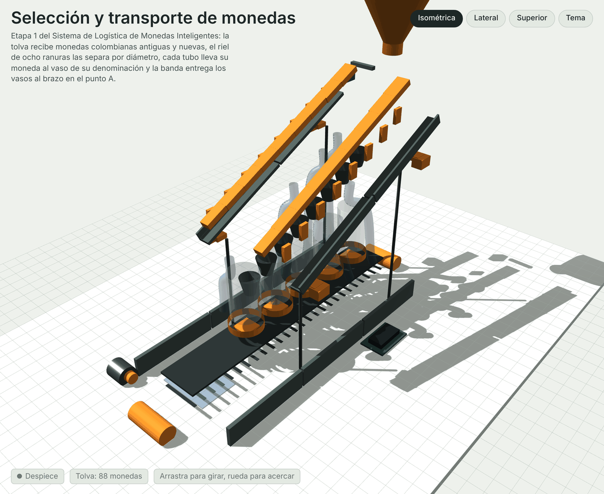
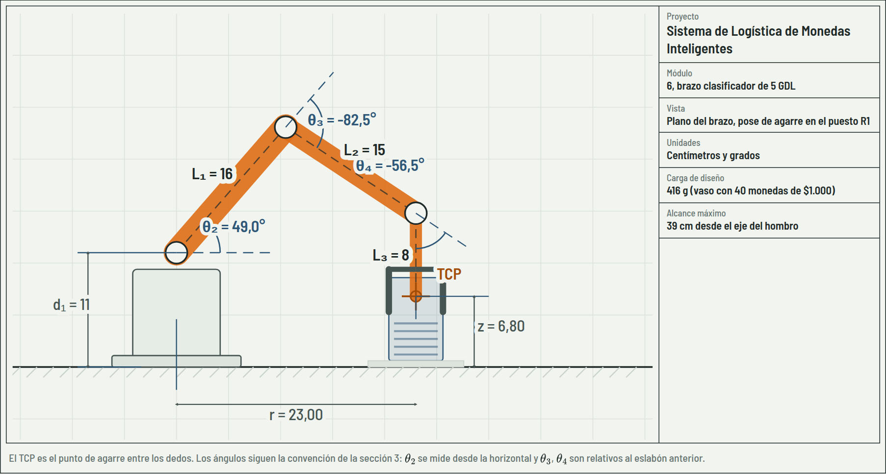

Micros y Laboratorio · UMNG
Sistema de Logística de Monedas Inteligentes
Monedas colombianas antiguas y nuevas entran a una tolva, se separan y cuentan, viajan en vasos por una banda y un brazo de 5 GDL las lleva del punto A al punto B esquivando cuatro obstáculos, para dejarlas ordenadas según la orden que recibe.

El recorrido
- Tolvaantiguas y nuevas
- Riel de 8 ranurassepara y cuenta por familia
- 9 vasos en la bandauno por ducto
- Punto Afin de la banda
- Nivel 1pasar por debajo
- Nivel 2recogerse y rodear
- Nivel 3esperar la ventana
- Nivel 4por debajo y bajada cronometrada
- Punto Brack ordenado
Demos
Sistema completo
Las dos etapas juntas, los cuatro obstáculos por nivel y el rack ordenado por el criterio que elijas.

Etapa 1: selección (v1)
Primera versión del riel: monedas antiguas y nuevas, conteo por estación, tubos colectores y vista de despiece.

Ensamble etapa 1
Las 24 piezas que se imprimen, en posición, con despiece, ficha de cada pieza y simulación de monedas a los 9 vasos.

Memoria de cálculo
Cinemática, espacio de trabajo, trayectorias, pares y servos, con calculadoras en vivo.
En números
8estaciones para 9 tipos de moneda
4obstáculos entre A y B, niveles 1 a 4
5criterios de orden, en los dos sentidos
105pruebas: 60 en Python y 45 en C++
Documentación
- Entrega de avancesLo que pide el parcial y dónde está cada cosa
- Monedas antiguas y nuevasCatálogo del Banco de la República y diseño del riel
- De A a B entre obstáculosNiveles, maniobras y cómo decide el planificador
- ArquitecturaRequisitos, bloques y algoritmo de orden
- CinemáticaDenavit-Hartenberg, directa, inversa y trayectorias
- ElectrónicaPines, PCA9685 y presupuesto de corriente
- ProtocoloTramas serie y rutas HTTP
- Clasificador físicoEtapa 1 para impresión FDM, sin tornillos ni soportes
- Guía de armado de la etapa 1Materiales, camas, cortes de PVC, cableado y pruebas